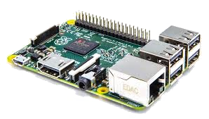

Bienvenue sur la page d'accueil. Ce projet vise à présenter le Raspberry Pi.
Le Raspberry Pi est un nano-ordinateur monocarte à processeur ARM conçu par le créateur de jeux vidéo David Braben, dans le cadre de sa fondation Raspberry Pi.
Cet ordinateur, qui a la taille d'une carte de crédit, est destiné à encourager l'apprentissage de la programmation informatique2 ; il permet l'exécution de plusieurs variantes du système d'exploitation libre GNU/Linux et des logiciels compatibles. Il est fourni nu (carte mère seule, sans boîtier, alimentation, clavier, souris ni écran) dans l'objectif de diminuer les coûts et de permettre l'utilisation de matériel de récupération.
Son prix de vente était estimé à 25 $, soit 19,09 €, début mai 2011. Les premiers exemplaires ont été mis en vente le 29 février 2012 pour environ 25 €. En septembre 2016, plus de dix millions de Raspberry Pi ont été vendus. De multiples versions ont été développées, les dernières sont vendues un peu plus de 25 € pour le B+, à un peu plus de 30 € pour le Pi 2 (2015), un peu plus de 38 € pour le Pi 3 (2016) et 5$ pour le Raspberry Zero (2016)
En 2006, les premiers prototypes du Raspberry Pi sont développés sur des microcontrôleurs Atmel ATmega 644. Le schéma et le plan du circuit imprimé sont rendus publics. Cet ordinateur s'inspire du BBC Micro d'Acorn Computer (1981) et est destiné à encourager la jeunesse à la programmation. Le premier prototype ARM est intégré dans un boitier de la même taille qu'une clé USB avec un port USB d'un côté et un port HDMI de l'autre.
L'objectif de la fondation est alors de proposer deux versions, l'une à 25 $ US et une deuxième à 35 $ US. L'ouverture des commandes pour le modèle B (le plus cher) a eu lieu le 29 février 20129 et le 4 février 2013 pour le modèle A (le moins cher).